Dokumentenmanagement (DMS)
Funktionen des Dokumentenmanagements
Das DMS ist das umfangreichste Modul zur Verwaltung von Dokumenten. Es beinhaltet zahlreiche Funktionen:
-
Ordnerstruktur
-
Verknüpfungen
-
Dokumentenstatus
-
Metadaten
-
Versionierung
-
Freigabe-/Genehmigungsprozess
-
Berechtigungssteuerung
-
Benachrichtigung
Damit bietet es notwendigen Funktionen, um das Dokumentenmanagement auch bei komplexeren Anforderungen abbilden zu können.
Auf der Übersichtsseite gibt es die bekannten Filter und Darstellungsoptionen, mit denen nach Dokumenten gesucht werden kann. Filterabfragen können gespeichert werden.
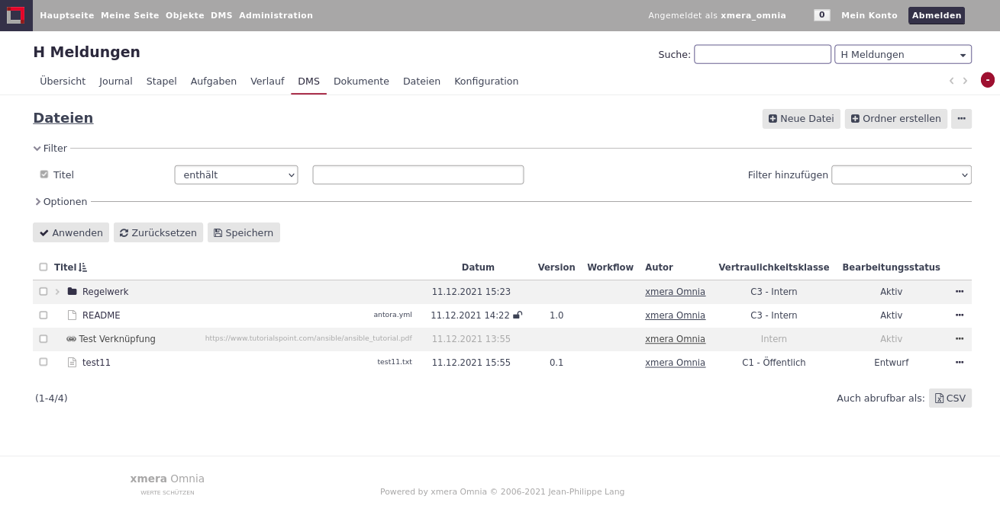
Diese Übersicht kann zum einen über das Topmenü, mit der Darstellung aller aktivierten DMS Module des Systems, oder über das Objektmenü, mit der Darstellung der Dokumente in einem einzelnen Objekt, erreicht werden.
Dokumente verwalten
Neues Dokument anlegen
Ein neues Dokument wird über den Button 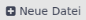 angelegt. Zunächst erscheint ein Fenster:
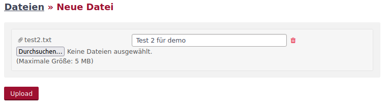
Hier kann über den Button 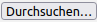 der Dateiexplorer des eigenen Rechners aufgerufen und die hochzuladenden Dateien hinzugefügt werden oder durch Drag & Drop Dateien hinzugefügt werden. Mit Klick auf den Button 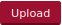 erscheint folgende Maske zum Erfassen der Metadaten der Datei.
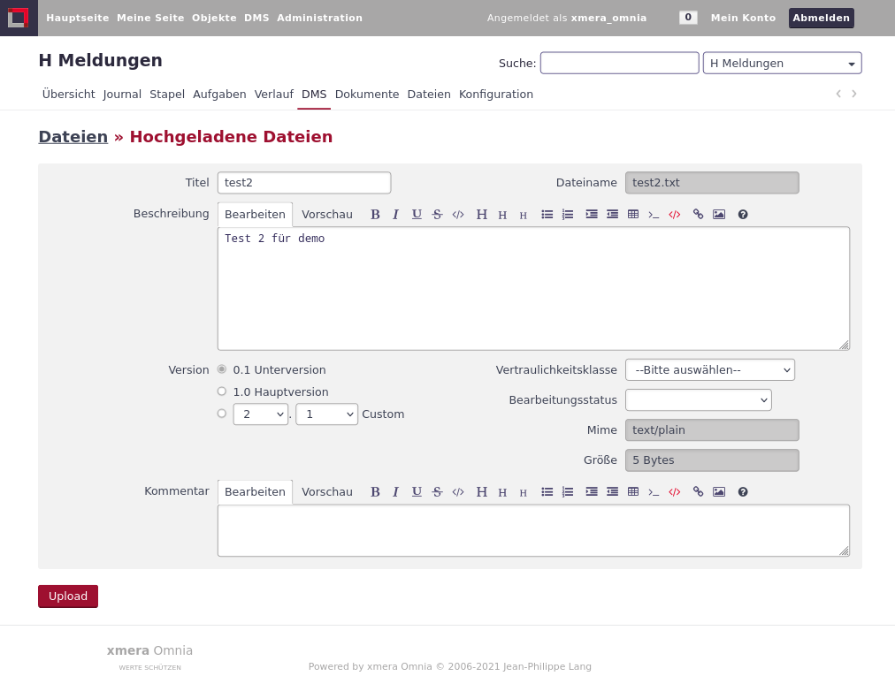
In dieser Maske werden die Metadaten wie ein beschreibender Text, die Version, ein Kommentar des Bearbeiters sowie Eigene Felder, die dem DMS durch den Administrator hinzugefügt wurden.
Mit dem Klick auf den Button wird die Datei hochgeladen. Werden mehrere Dateien hochgeladen, wird für jede Datei untereinander angeordnet eine gesonderte Maske angezeigt.
Neue Dokumentversion anlegen
Ein zentrales Element ist die Versionierung von Dokumenten. Soll ein Dokument verändert werden, so wird dieses nicht ersetzt. Sondern es wird eine neue Version mit den geänderten Daten angelegt. Somit sind die Änderungen eines Dokuments immer nachvollziehbar.
Wird ein Dokument erstellt, so wir die erste Version angelegt. Diese Version sollte nur durch die Administration wieder gelöscht werden können. Soll dieses Dokument geändert werden, so wird eine neue Version erstellt. Im folgenden Bild sind im Bearbeitungsfenster des Dokuments zwei Versionen zu sehen.
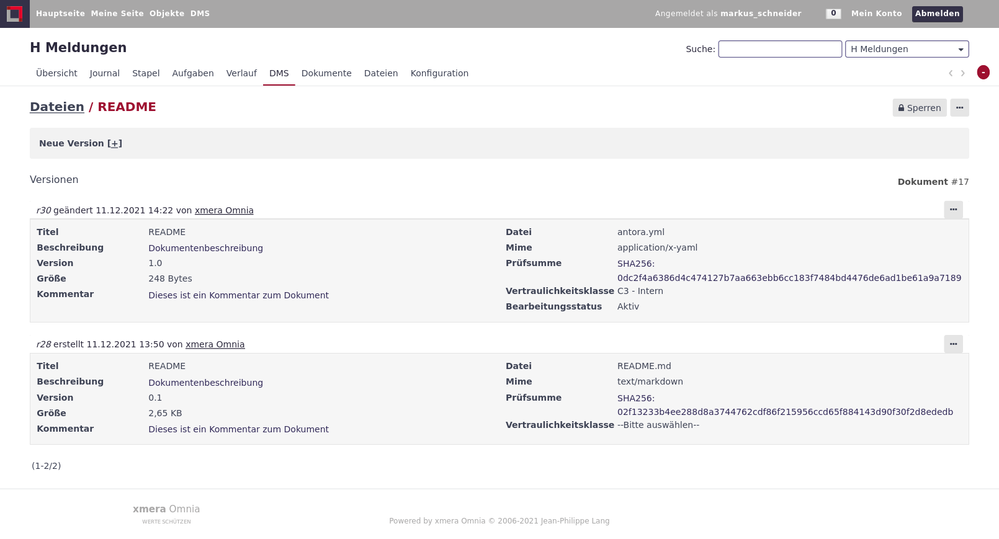
Es können alle Beschreibungen der Dokumentenversionen eingesehen und das dazugehörige Dokument hochgeladen werden. In der Dokumentenliste sind immer nur die aktuell gültigen Inhalte des Dokuments zu sehen.
Soll ein Dokument verändert werden, so muss eine neue Version angelegt werden. Dazu wird durch einen Klick auf das [+] neben Neue Version das Bearbeitungsfenster geöffnet.
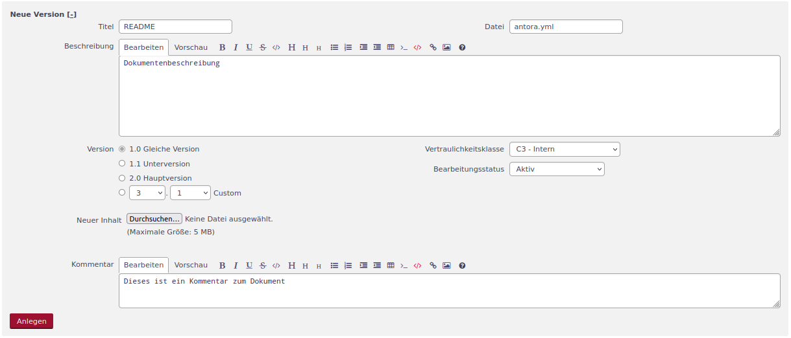
In diese Bearbeitungsmaske sind alle Informationen des Dokuments hinterlegt und können bearbeitet werden. Wird keine neue Datei hochgeladen, so wird die Datei der letzten gültigen Version weiter verwendet. Wird eine neue Datei hochgeladen, wird diese Datei der Version zugeordnet.
Mit dem Klick auf den Button  wird die Version angelegt.
wird die Version angelegt.
Interne und externe Dokumentverknüpfungen
Im DMS können auch Verknüpfungen erstellt werden. Eine Verknüpfung kann im 3-Punkte-Menü
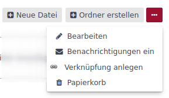
über den Menüpunkt Verknüpfung anlegen angelegt werden. Es erscheint folgende Maske:
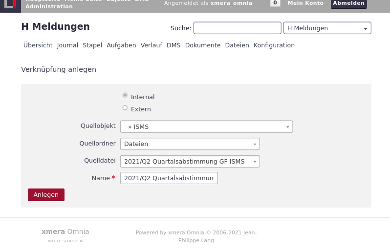
Dabei wird zwischen internen und externen Verknüpfungen unterschieden. Interne Verknüpfungen zeigen auf Dateien, die in anderen Objekten abgelegt wurden. Entsprechend ist in diesem Fall das Quellobjekt und die Quelldatei zu wählen. Quellordner und Name werden automatisch übernommen.
Externe Verknüpfungen sind Verbindungen zu externen Servern, die über eine URL erreicht werden können. Entsprechend ändert sich die Maske bei der Auswahl Extern wie folgt.
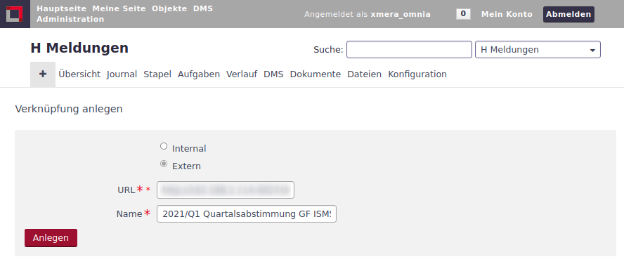
Hier können die URL und der Name der Datei gepflegt werden.
Durch Klicken auf den Button wird die Verknüpfung in der DMS-Dateiliste angezeigt.
Benachrichtigung über Dokumente
xmera Omnia bietet den Benutzern die Möglichkeit sich über Änderungen in Ordnern per Mail informieren zu lassen. Diese Funktion kann über das 3-Punkte-Menü mit Benachrichtigung ein und Benachrichtigung aus gesteuert werden.
| Die E-Mail wird an die im Benutzerprofil angegebene E-Mailadresse versand. |
Löschen von Dokumenten
Ein Löschen von Dokumenten ist aus der Dokumentenliste möglich. In der Dokumentenleiste kann, bei entsprechender Berechtigung über den Button  das Dokument gelöscht werden.
das Dokument gelöscht werden.
Löschen von Dokumentversionen
Wird über das 3-Punkte-Menü die Bearbeitung aufgerufen, kann eine Version gelöscht werden. Das Löschen erreicht man über das 3-Punkte-Menü neben der Version.
Wurde ein Dokument über einen Genehmigungs-Workflow freigegeben, so kann das Dokument nicht gelöscht werden. Hier besteht nur die Möglichkeit die Version zu sperren.
Ein Dokument, bei dem aktuell der Freigabeprozess läuft, kann weder gelöscht noch gesperrt werden.
Sperren von Dokumenten
Mit dem Sperren von Dokumenten wird verhindert, dass eine Datei bearbeitet werden kann. Das Sperren erfolgt entweder über die Auswahl 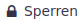 oder über den gleich bezeichneten Button im oberen rechten Bereich der Bearbeitungsmaske des Dokuments. Ist ein Dokument gesperrt, so wird im Datumsfeld das Symbol 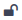 angehängt und die Buttons für das Sperren werden zum Button 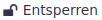. Über die Button kann das Dokument wieder entsperrt werden.
Metadaten
xmera Omnia bietet die Möglichkeit in der Administration eigene Felder zu jedem Dokument hinzuzufügen. Zum Beispiel sind es hier, wie im folgenden Bild zu sehen, die Vertraulichkeitsklasse und der Bearbeitungsstatus.
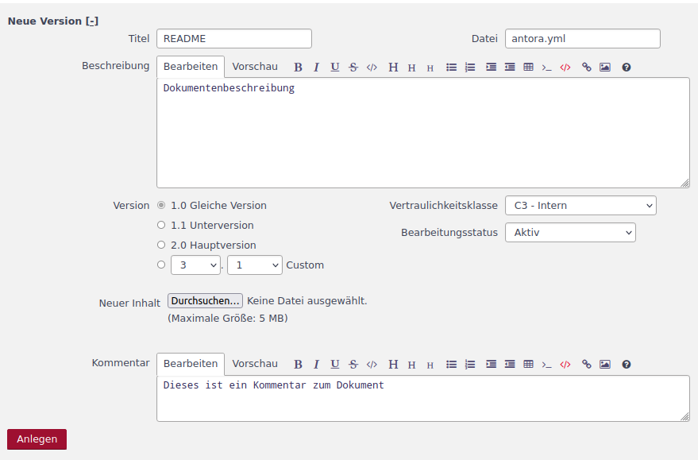
Diese eigenen Felder ermöglichen weitere Klassifizierungs- und Strukturierungsmöglichkeiten, nach denen in der Dokumentenliste auch gefiltert / gruppiert werden kann.
Ordnerstruktur
Durch eine Ordnerstruktur lassen sich die Dokumente in der Dokumentenliste strukturieren. Im DMS lassen sich in jedem Ordner Berechtigungen vergeben, die es ermöglichen, einzelne Ordner nur einer eingegrenzten Nutzergruppe zugänglich zu machen.
Ordner anlegen
Angelegt werden Ordner über Klicken des Buttons 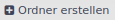. Es erscheint folgende Erfassungsmaske:
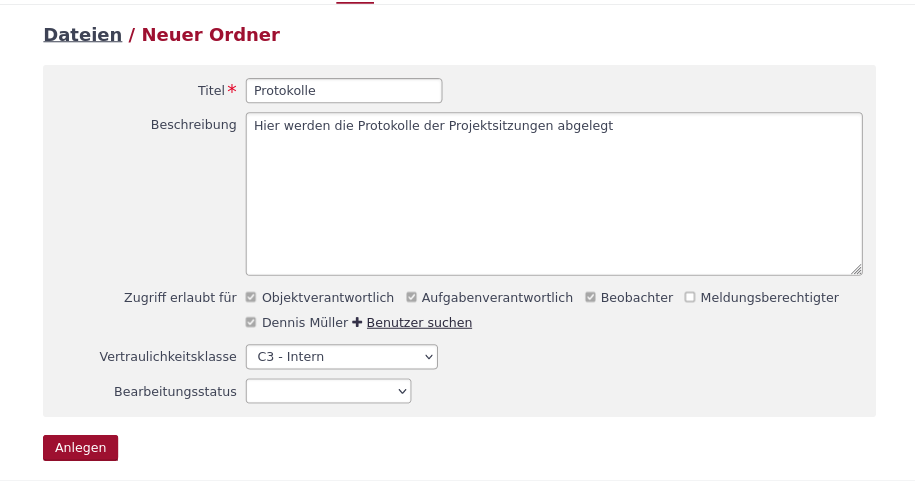
Neben dem Datum kann eine Beschreibung, sowie weiter individuelle Einträge (eigenen Felder) dem Ordner zugeordnet werden.
Weiter können die Zugriffe auf den Ordner durch die Auswahlfelder im Bereich Zugriff erlaubt für eingeschränkt werden. Sind keine Haken gesetzt, wird die Zugriff durch die Rollenberechtigungen bestimmt. Die Berechtigung kann durch Auswahl einzelner Rollen oder Benutzer weiter eingeschränkt werden. Benutzer werden zunächst nicht angezeigt. Durch Klicken auf den Button 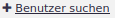 können Benutzer / Gruppen des Objekts hinzugefügt werden.
Navigieren
Durch Klicken auf den Ordnernamen in der Dokumentenliste gelangt man in die Liste des Ordners.
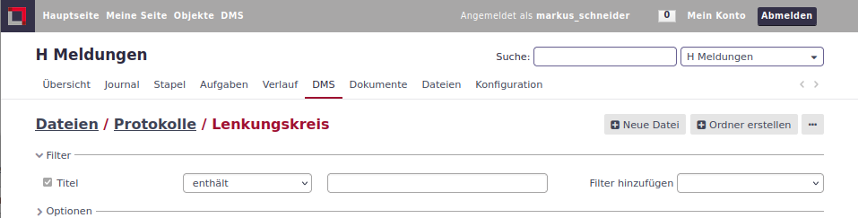
Angezeigt wird der aktuelle Ordner in der Zeile unterhalb des Objektmenüs. In dem Beispiel oben ist es Dateien / Protokolle / Lenkungskreis. Durch Klicken auf den Ordnernamen in der Ordnerstruktur kann man direkt in die Dokumentenliste des entsprechenden Ordners springen.
Ordner und Dokumente verschieben/kopieren
Neue Dokumente werden immer dem Ordner zugeordnet, von dem aus eine neue Datei hinzugefügt wird. Eine Datei, aber auch ein ganzer Ordner lassen sich im Nachgang auch verschieben oder kopieren. Im 3-Punkte-Menu in der Zeile des Ordner oder der Datei, die verschoben werden soll, wählt man den Button 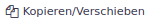. Es erscheint folgende Maske:
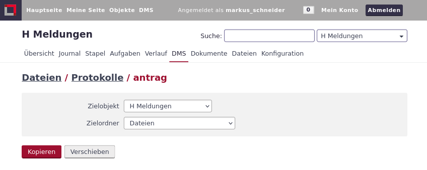
In der Maske kann das Zielobjekt und der Zielordner gewählt werden, in das das Dokument/Ordner verschoben bzw. kopiert werden soll. Die Auswahl, ob es sich um eine Kopie oder ob es ich um ein Verschieben handelt, wird durch Klicken auf den Button  oder 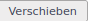 festgelegt.
oder 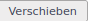 festgelegt.
Genehmigungs-Workflow
Mit dem Genehmigungs-Workflow bietet xmera Omnia die Möglichkeit Genehmigungsprozesse für Dokumente abzubilden. Hierzu wird
-
ein Workflow festgelegt, in welchen Schritten die Genehmigung zu erfolgen hat
-
der Workflow einem Dokument zugeordnet,
-
der Freigabeprozess gestartet und
-
die Freigabe im Dokument gespeichert.
Diese Schritte werden im Folgenden beschrieben.
Workflows erstellen
Grundsätzlich werden globale und lokale Workflows unterschieden. Globale Workflows werden im Administrationsbereich von xmera Omnia erstellt und stehen in allen Objekten zur Verfügung. Die lokalen Workflows werden im Konfigurationsbereich des Objekts erstellt und stehen nur dem Objekt zur Verfügung. Die Erstellung eines Workflows ist in beiden Fällen gleich.
Die Erstellung und Pflege von lokaler Genehmigungs-Workflows erfolgt in der Objektkonfiguration im Reiter Genehmigungs-Workflow.
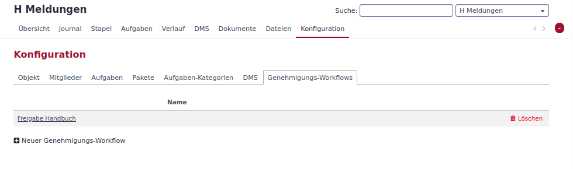
Hier finden sich die für das Objekt definierten Workflows. Es können über den Button 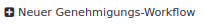 ein neuer Workflow erstellt, durch Klicken auf den Namen des Workflows in der Liste der Workflow bearbeitet werden oder durch Klicken auf der lokale Workflow gelöscht werden.
| Ein Workflow kann gelöscht werden, obwohl er bereits einem Dokument zugeordnet wurde. Dieses führt zur Fehlern, die nicht über die Anwendung zu reparieren sind. |
Wird ein neuer Workflow erstellt, so erscheint folgende Maske:
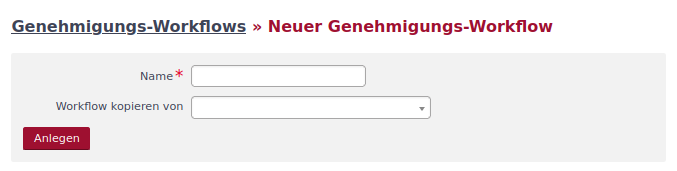
Hier wird der Name des Workflows festgelegt und es kann optional als Vorlage ein bestehender Workflow gewählt werden.
Mit dem Button oder durch Bearbeiten eines bestehenden Workflows gelangt man in die Bearbeitungsmaske des Workflows.
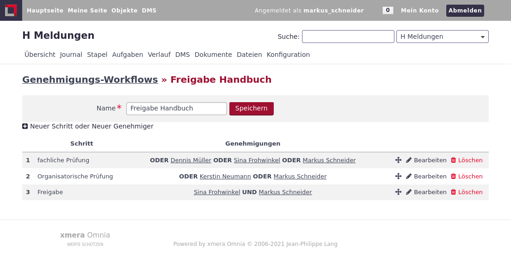
In dieser Maske kann zum einen der Name des Workflows verändert werden und es können die Workflow Schritte bearbeitet werden. Der Ablauf des Workflows erfolgt in Schritten. Es werden die Genehmiger des 1. Schritts zur Genehmigung/Ablehnung aufgefordert werden. Ist dieser Schritt genehmigt, wird der die Genehmiger des folgenden Schritts zur Genehmigung/Ablehnung aufgefordert. Sind alle Schritte genehmigt, so wird das Dokument als genehmigt klassifiziert.
Mit dem Button 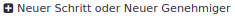 wird eine Maske geöffnet, mit der Objektmitglieder einem neuen oder einem bestehenden Schritt hinzugefügt werden können.
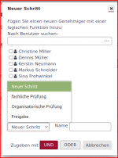
Hier müssen als erstes die Mitglieder der Gruppe gewählt werden, die dem Bearbeitungsschritt zugeordnet werden sollen. Als nächstes ist der Schritt zu wählen, dem diese Mitglieder zugeordnet werden sollen. Bei der Erstellung eines neuen Schritts ist der Name des Schritts neben dem Auswahlfeld zu setzen. Mit dem Wählen der Auswahl UND oder ODER wird der Schritt erstellt bzw. geändert. Alle Mitglieder die mit einem UND dem Schritt zugeordnet sind müssen den Schritt genehmigen, damit der Schritt abgeschlossen sind. Alle Mitglieder die mit ODER dem Schritt zugeordnet sind, sind optional. Sind nur Mitglieder mit ODER dem Schritt zugeordnet, muss zur Freigabe des Schritts mindestens ein Mitglied den Schritt freigeben.
Über den Button können weitere Schritte hinzugefügt werden.
Workflows bearbeiten
Die Bearbeitung teilt sich in drei Aspekte auf:
-
Neue Mitglieder zu einem Schritt hinzufügen
-
Mitgliederfunktionen ändern oder löschen
-
Reihenfolge der Schritte verändern
Neue Mitglieder werden über den Prozess in einen neuen Schritt eingebunden. Der Ablauf entspricht dem Vorgehen beim Erstellen eines neuen Schrittes. Bei dem Hinzufügen wird der Schritt ausgewählt, in dem das Mitglied bzw. die Mitglieder hinzugefügt werden sollen.
Soll die Auswahl UND / ODER für ein Mitglied verändert werden oder soll ein Mitglied aus einem Schritt entfernt werden, so geht man über den Button  in der Zeile des zu bearbeitenden Schritts. Es öffnet sich die Zeile im Bearbeitungsmodus.
in der Zeile des zu bearbeitenden Schritts. Es öffnet sich die Zeile im Bearbeitungsmodus.
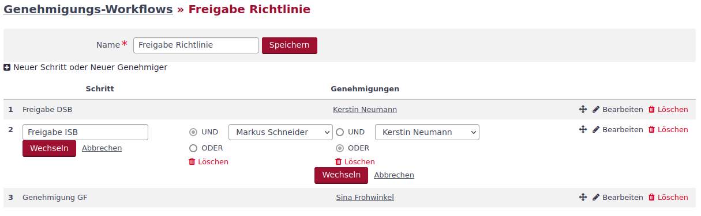
Hier kann der Name des Schritts angepasst werden, pro Mitglied die Option UND bzw. ODER verändert werden oder das Mitglied gelöscht werden. Mit dem Button Wechseln wird die Änderung übernommen und mit Abbrechen verworfen.
Die Reihenfolge der Schritte kann über eine Drag & Drop Funktion verändert werden. Mit gehaltener linker Maustaste auf das Symbol 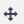 kann die gewählte Zeile verschoben werden. An der Stelle, an der die Maus gelöst wird, wird der Schritt hin verschoben.
Workflows zuordnen
Um einen Workflow zu starten, muss der Workflow zunächst dem Dokument zugeordnet werden. Dieses erfolgt über den Punkt Workflow starten im 3-Punkte-Menü der Dokumentenzeile.
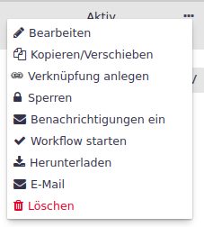
Es erscheint ein Fenster, in dem der für die Freigabe benötigte Workflow ausgewählt wird.
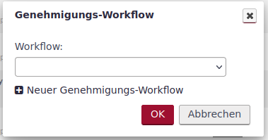
Es ist per Dropdown-Menü ein Workflow auszuwählen. Mit OK wird der gewählte Workflow dem Dokument zugeordnet.
Anschließend muss für die Durchführung des Workflowprozess dieser gestartet werden. Hierzu wird wiederum über das 3-Punkte-Menü über den Menüpunkt Start der Prozess gestartet.
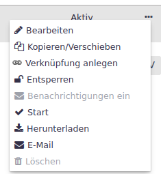
Der aktuelle Status des Workflowprozesses erscheint durch Klicken auf den Status des Workflows. Es wird die Darstellung des Workflowporzesses mit den einzelnen Schritten angezeigt.
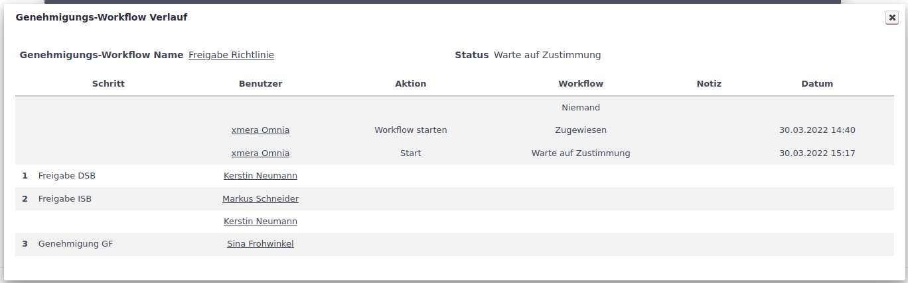
Workflows freigeben
Ist der Freigabeprozess gestartet wird allen Mitgliedern des 1. Schritt auf "Meine Seite" die offenen Genehmigungsworkflows angezeigt.
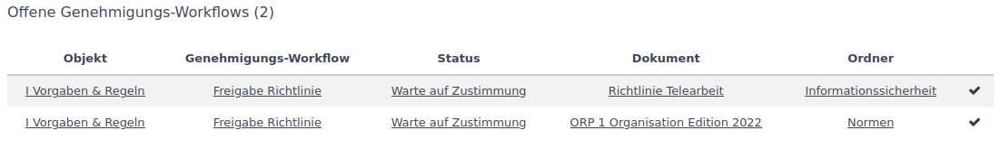
Weiter wird xmera Omnia auch eine E-Mail an die Freigeber des Schritts gesendet.
Eine Freigabe ist im DMS am freizugebenden Dokument möglich. Ein Freigeber erhält im 3-Punkte-Menü in der Dokumentenseite die Auswahl Genehmigt mit der die Freigabe gestartet werden kann.
Wird der Freigabeprozess mit dem 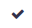 gestartet wird das Freigabemaske geöffnet.
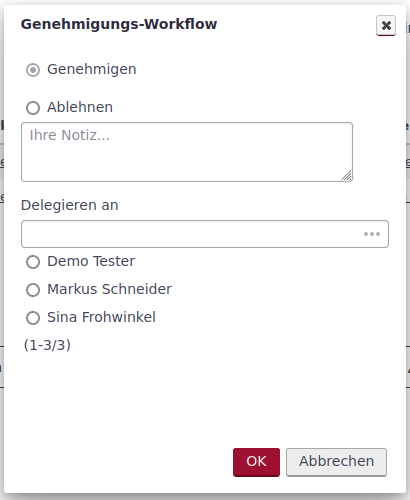
In dieser Maske kann das Dokument genehmigt, abgelehnt (nur mit Begründung) oder an ein anderes Mitglied delegieren.
Sind die Freigaben für den 1. Schritt abgeschlossen, so beginnt der Prozess für den Folgeschritt. Dieses wird bis zum letzten Schritt fortgesetzt. Ist der letzte Schritt genehmigt, ist das Dokument genehmigt.
Wird ein Workflow Abgelehnt so muss eine neue Version erstellt werden und der Workflow neu gestartet werden.